| 日付 | 2011年12月4日（日） |
|---|---|
| 山域 | 丹沢 |
| メンバー | 家族（妻、長女・0歳） |
| 山行形態 | 子連れ日帰り |
| アクセス | 車 |
| ルート (Map) | 日向キャンプ場前駐車場→見晴台→大山→阿夫利神社→見晴台→日向キャンプ場前駐車場 |
昨日は飲み会があり、遠出するのが億劫だったため、近場の大山に登ることにする。
大山はいろいろな登山道があるが、今回は今まで歩いたことのない
日向薬師から雷ノ峰尾根経由で登ることにする。
8:46 日向キャンプ場前駐車場到着。標高370m。
すでに車はたくさん停まっている。
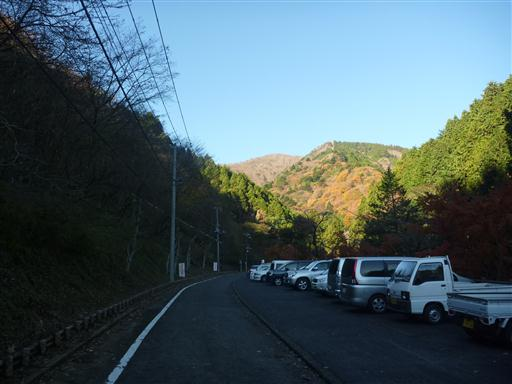
ゲートを超えて、しばらくは車道を歩いていく。
付近に標識がないので少々わかりにくい。
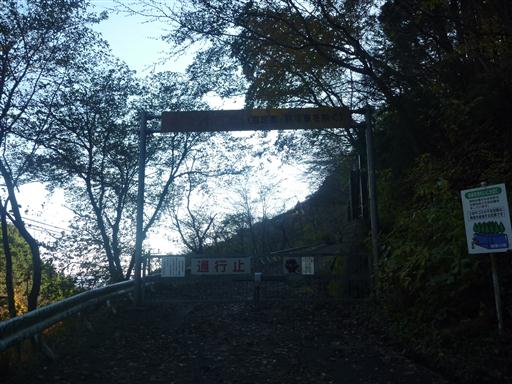
しばらく歩くと簡易トイレがあり、そこから登山道が始まっている。
足元に木の棒がたくさん置かれている。
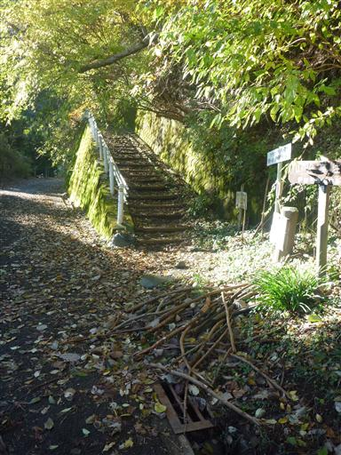
最初は植林地帯の中をジグザグに登っていく。傾斜は緩く、退屈な道が続く。
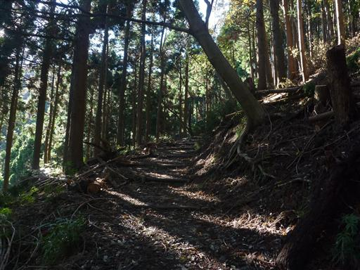
しばらく登ったところに、大きな地蔵が置かれている。
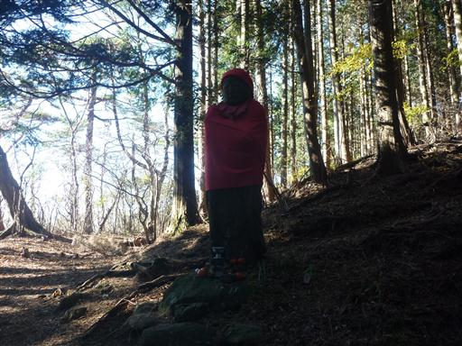
地蔵から先は明るい尾根道になる。この登山道は比較的人通りが少なく静かだ。
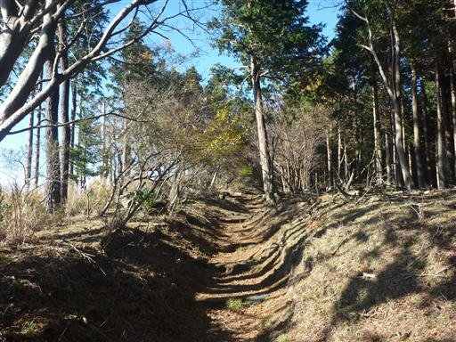
所々で展望が開ける。今日は快晴で大島がよく見えている。
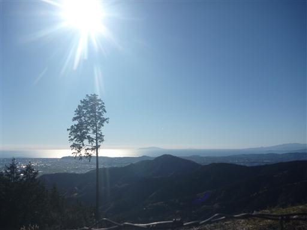
見晴台に到着。東屋とたくさんのテーブルが置かれている。
背後に見えるのは大山だ。
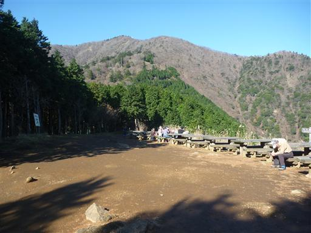
大山の右手には大山三峰山を望むことができる。
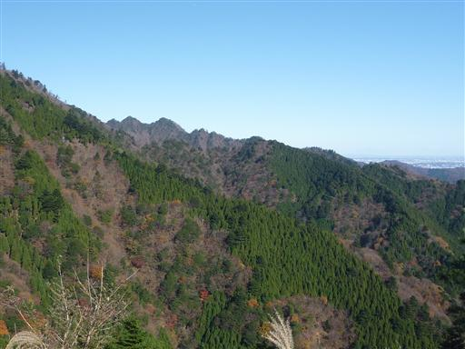
見晴台からも明るい尾根道が続く。
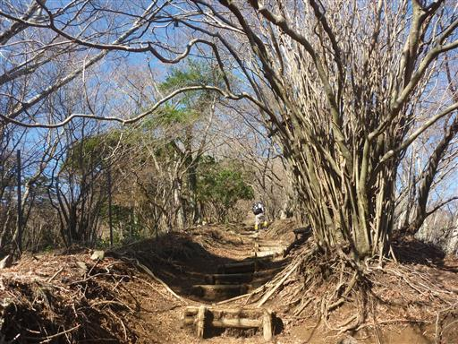
関東平野の向こうに、遠く筑波山がぼんやりと見えている。
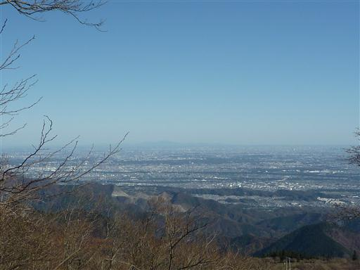
沢沿いに建物が並んで建っている。
大山ケーブルカーの入口付近で常に観光客で賑わっているところだ。
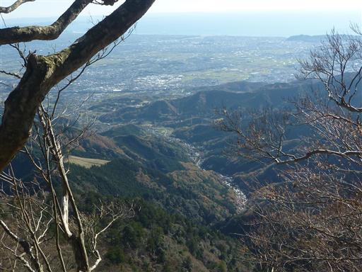
11:08 大山山頂到着。標高1252m。
3度目の大山山頂にて、ようやく快晴に巡り合えた。
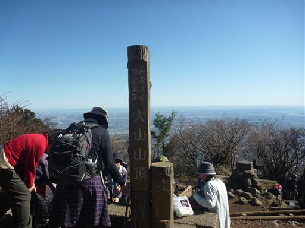
山頂は大勢のハイカーがたむろしている。
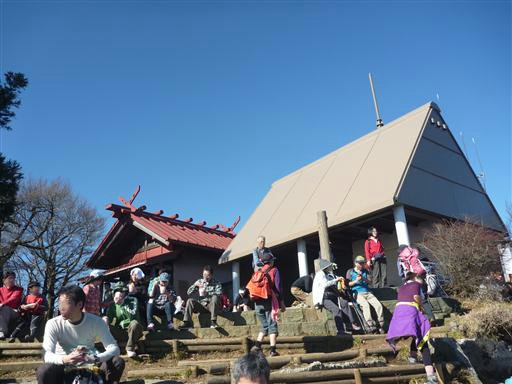
大山山頂奥ノ院でお参りをする。
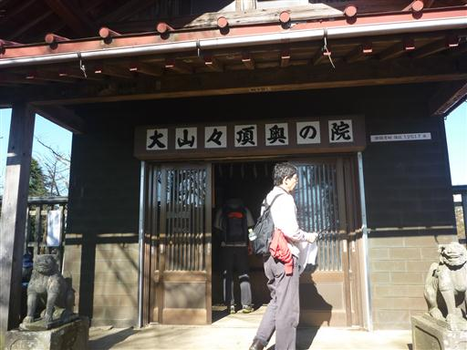
ベンチで昼食をとっていると、下から続々と人が登ってくる。
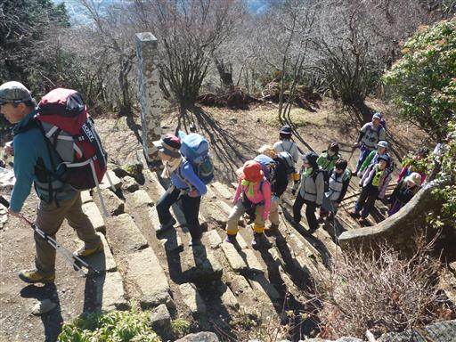
「ふりむけば富士山」の看板が立っている。
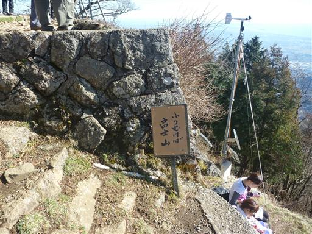
振り向くと障害物の隙間から富士山が頭を出している。
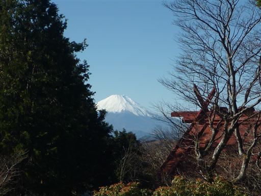
大山の山頂は丹沢の山並や富士山の展望はあまりよくなく、下界と海の展望が素晴らしい。
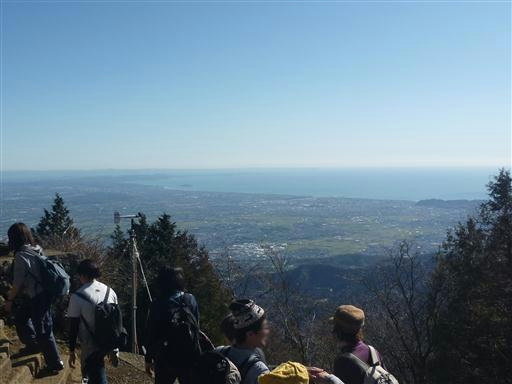
混雑する山頂を後にして下山を開始する。
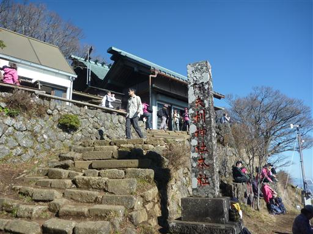
こちらの登山道からは富士山を望むことができる。
白い富士山を見るのは久しぶりだ。
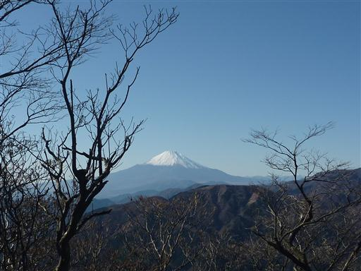
十六丁目追分の碑。ここで蓑毛方面へ下山する道と分けて、ケーブルカー方面に下っていく。

天狗の鼻突き岩。天狗が鼻を突いてあけた穴だといわれている。
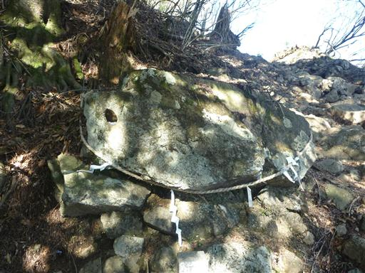
「牡丹岩」と書かれた案内板が立っている。足元に見られる球体の岩らしいが、これのことだろうか？
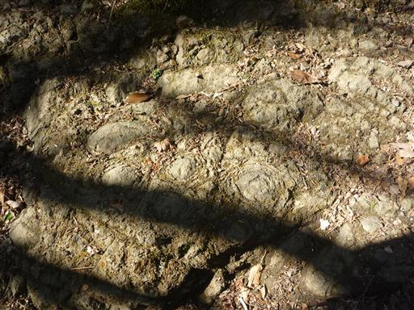
古くからの信仰の山だけあって、あたりは巨木が多い。
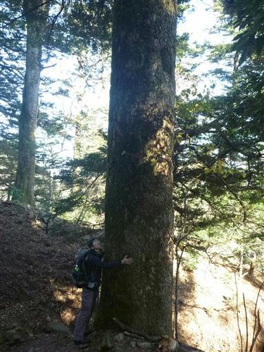
夫婦杉。前にここに来たときは雲に覆われシルエットしか見えなかったが、
今日はくっきりと見える。
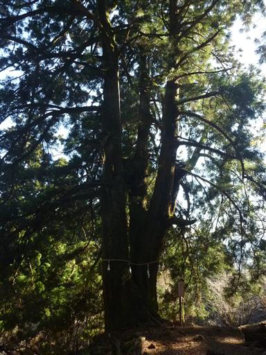
急な石段を下る。歩幅が狭く下りにくい。

大山阿夫利神社。大きな社殿が建っている。
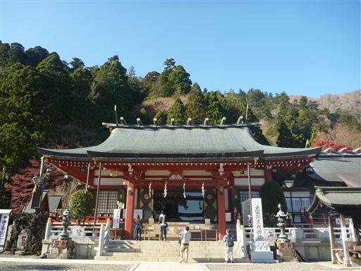
この辺りはまだ紅葉が美しい。
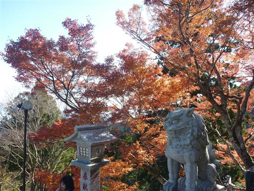
ケーブルカーの乗り場でもあるこの場所は、多くの売店が軒を連ねている。
少し休憩をとってソフトクリームを食べる。
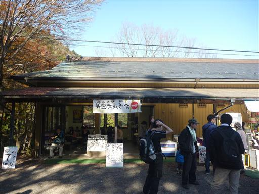
阿夫利神社からは、登りで使用した道に合流するため見晴台方面へ進む。
道脇に小さな鳥居と祠が祀られている。
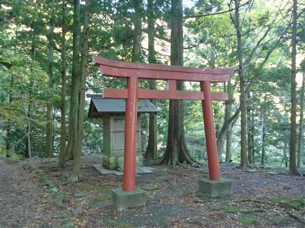
二重滝。2段の小さな滝だ。
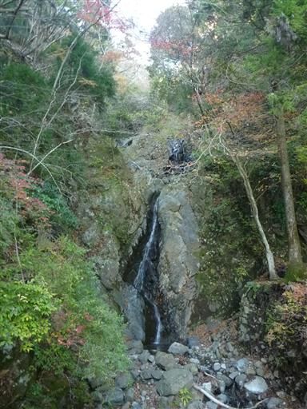
美しい石橋があり、そこから二重滝を眺められる。
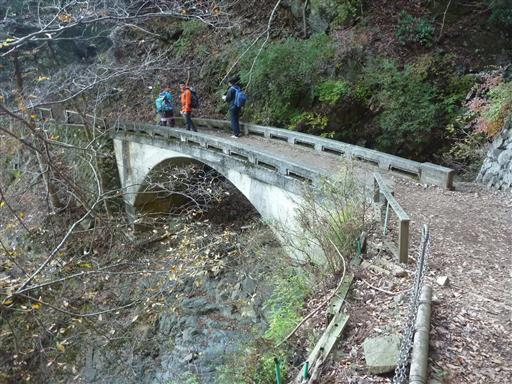
二重滝の側にある二重神社。
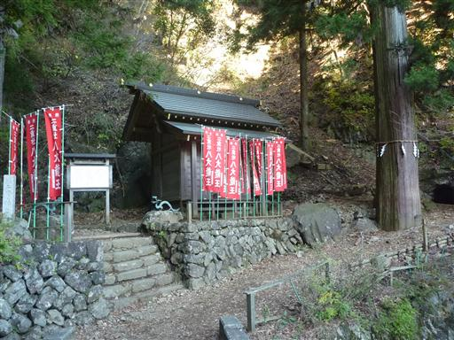
側には龍が置かれている。2体あるが1体は壊れていた。
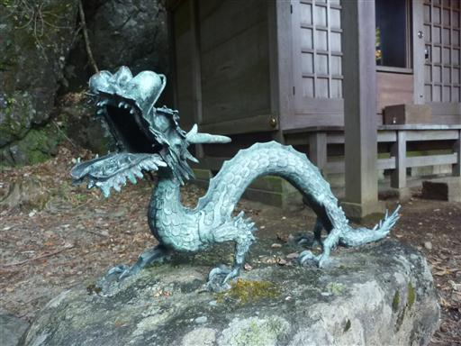
岩に人が入れるくらいの大きさの穴が開いている。
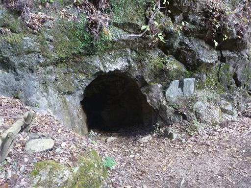
二重滝を後にし、トラバース道を歩いていく。アップダウンはほとんどない。
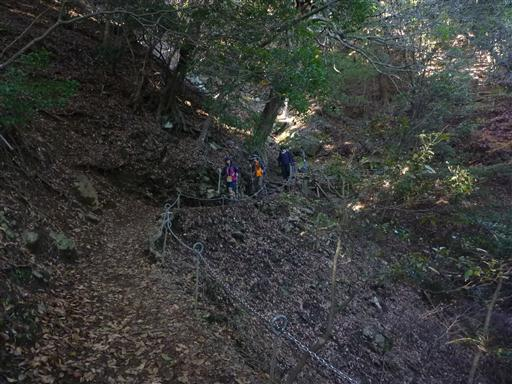
見晴台に到着したら、もと来た尾根道を下っていく。途端に人の数が少なくなる。
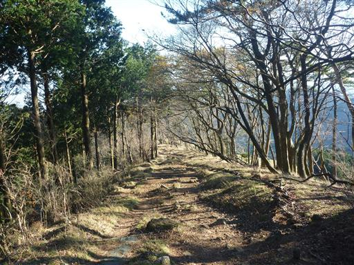
14:50 日向キャンプ場前駐車場到着。
遠くの方に横浜市街が見えている。
3度目の正直で、快晴に恵まれた大山登山だった。
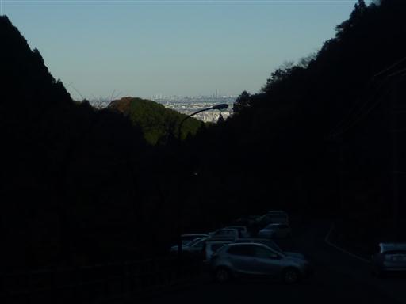